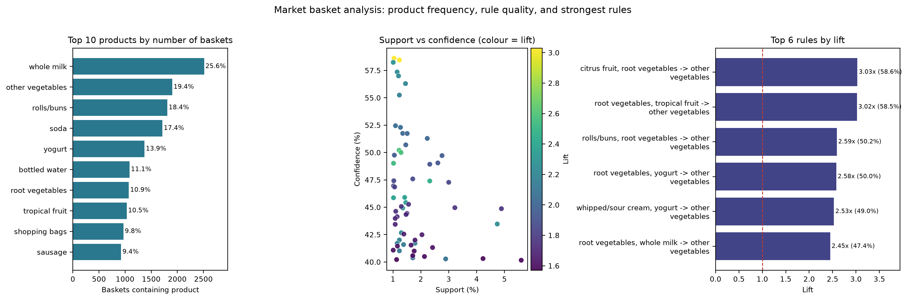

Submitted in partial fulfilment of the requirements for the minor project
| Student | [Student Name] |
| Roll number | [Roll Number] |
| College | [College Name] |
| Department | [Department Name] |
| Guide | [Guide Name] |
| Academic year | [Academic Year] |
Retail baskets contain patterns: some products are bought together far more often than chance would
suggest. This project applies market basket analysis to the public Groceries dataset using the
Apriori algorithm. The 9,835 baskets and 169 products are cleaned, one-hot encoded, and mined at 1%
minimum support. Rules are generated with confidence >= 40% and lift > 1, producing 333 frequent
itemsets and 62 rules. The strongest rule, {citrus fruit, root vegetables} -> {other vegetables}, has
support 1.04%, confidence 58.62%, and lift 3.03. The results are visualised and translated into retail
suggestions. The report also explains why association is not causation and why the dataset's age matters.
Keywords: market basket analysis, association rule mining, Apriori, support, confidence, lift
Data mining is the process of finding useful patterns in large datasets. In retail, one of the most direct patterns is co-occurrence: which products appear in the same basket. Market basket analysis, also called affinity analysis, studies these combinations.
If bread and butter appear together much more often than their individual popularity would predict, a store can place them near each other, bundle them, or recommend one when the other is selected. Association rule mining measures and ranks these relationships using support, confidence, and lift.
A store does not automatically know which products form meaningful combinations. The problem is to identify product sets that occur often enough to matter, generate directional rules, and separate strong associations from combinations that are common only because both products are popular.
The project is a descriptive co-occurrence analysis of one public dataset. It does not use prices, margins, quantities, customer IDs, dates, or store locations. It is an educational study, not a production recommendation system. Practical uses include product placement, meal bundles, targeted promotions, online recommendations, and testing store layouts.
The project uses the Groceries dataset, distributed with the R package arules and mirrored in the
Machine Learning with R repository on GitHub
(https://github.com/stedy/Machine-Learning-with-R-datasets). Each line of groceries.csv is one basket,
with products separated by commas.
Computed description: 9,835 transactions, 169 distinct products, average basket size 4.41, median 3, maximum 32, and 2,159 single-item baskets (22.0%). The data are an older public snapshot, widely described as 1990s grocery transactions. The file has no date field, so the exact period cannot be verified. It also lacks prices, quantities, customer IDs, stores, and promotion flags.
Each line is treated as one basket. The notebook strips whitespace, converts names to lowercase, removes
empty and missing-like tokens (nan, none, null), removes duplicate products inside a basket, and
drops empty baskets.
On the full file, these checks found no blank rows, no missing-like tokens, and no duplicate items; all 9,835 baskets were valid. The cleaning code is retained because real retail files are rarely tidy. Single-item baskets are kept: they are real purchases and affect support. They cannot form a pair themselves, but removing them would inflate the support of every pair.
Apriori finds frequent itemsets in stages. It counts single products, keeps those above minimum support, joins them into pairs, counts the pairs, and continues with larger sets. It uses the Apriori principle: if an itemset is infrequent, every larger itemset containing it must also be infrequent, so those candidates are skipped. This makes the search practical.
The minimum support is 1%, so an itemset must appear in at least ceil(0.01 x 9,835) = 99 baskets.
This is a business choice: low enough to find useful pairs, high enough to avoid thousands of one-off
combinations.
For a rule A -> B:
Lift = 1 means no association beyond the baseline; lift > 1 means B is more likely when A is present; lift < 1 means they appear together less often than expected.
Worked example (computed): for root vegetables -> other vegetables, 1,072 baskets contain root
vegetables, 1,903 contain other vegetables, and 466 contain both. Support = 466 / 9,835 = 4.74%;
confidence = 466 / 1,072 = 43.47%; lift = 43.47% / 19.35% = 2.25. So 43.5% of root-vegetable
baskets also contain other vegetables, 2.25 times the normal rate.
Tools: Python 3, Jupyter Notebook, pandas, NumPy, mlxtend, Matplotlib, and Seaborn.
Workflow: download the CSV -> read and clean baskets -> describe the data -> one-hot encode -> run Apriori at 1% support -> generate rules at 40% confidence and lift > 1 -> sort and visualise -> interpret and discuss limitations.

Figure 1. Main outputs: product frequency (left), support vs confidence (middle), and strongest rules (right). Full-size versions are in the notebook.
Computed findings: the numbers below come from running the notebook on the full 9,835-transaction dataset with 1% support, 40% confidence, and lift > 1. They are measured, not estimated.
| Rule | Support | Confidence | Lift |
|---|---|---|---|
{citrus fruit, root vegetables} -> other vegetables |
1.04% | 58.62% | 3.03 |
{root vegetables, tropical fruit} -> other vegetables |
1.23% | 58.45% | 3.02 |
{rolls/buns, root vegetables} -> other vegetables |
1.22% | 50.21% | 2.59 |
{yogurt, root vegetables} -> other vegetables |
1.29% | 50.00% | 2.58 |
{root vegetables, whole milk} -> other vegetables |
2.32% | 47.40% | 2.45 |
{curd, yogurt} -> whole milk |
1.01% | 58.24% | 2.28 |
The first rule: 1.04% of baskets contain all three products; among baskets with citrus fruit and root
vegetables, 58.62% also contain other vegetables, 3.03 times baseline. yogurt -> whole milk is more
common (5.60% support) but weaker (lift 1.57).
Figure 1 (page 2) summarises the three labelled charts, and full-size versions are in the notebook. The top-products bar chart shows whole milk leading at 25.55%, followed by other vegetables (19.35%) and rolls/buns (18.39%). The support-confidence scatter plot places each rule at its support and confidence, with colour showing lift; the upper-right area is ideal, but the most common rules are not the brightest. The top-rules bar chart ranks the six strongest rules by lift, all above 2.2. Every chart has labelled axes and a source note.
The project demonstrates a complete association rule mining workflow. Vegetables and dairy products co-occur in meaningful ways, and some rules are about three times stronger than baseline. However, broad categories hide SKU-level detail and association is not causation, so changes should be tested with a controlled experiment.
other vegetables is a category, not a specific product, and 1%
support plus 40% confidence change which rules appear.Add prices and margins, use newer data, try FP-Growth, add stability checks, and test bundles or layouts with A/B experiments.
mlxtend documentation: https://rasbt.github.io/mlxtend/arules package: https://cran.r-project.org/package=arules